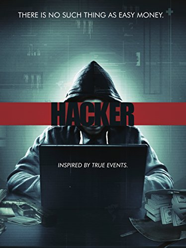

Genres: Action, Adventure, Crime, Detective Release date: 31 December 2009 Casts: Robert Downey Jr, Jude Law, Rachel McAdams Description: Detective Sherlock Holmes and his stalwart partner Watson engage in a battle of wits and brawn with a nemesis whose plot is a threat to all of England. Budget: $90 million Box office: $524 million
Genres: Action, Crime, Drama, Mystery Release date: 13 December 2009 Casts: Tom Schilling, Elyas M'Barek, Wotan Wilke Möhring Description: Benjamin, a young German computer whiz, is invited to join a subversive hacker group that wants to be noticed on the world's stage. Budget: $109 million Box office: $332 million
Genres: Action, Crime, Drama, Mystery Release date: 29 January 2015 Casts: Chris Hemsworth, Viola Davis, Wei Tang Description:A furloughed convict and his American and Chinese partners hunt a high-level cybercrime network from Chicago to Los Angeles to Hong Kong to Jakarta. Budget: $19 million Box office: $70 million
Genres: Crime, Drama, Thriller,Mystery Release date: 15 September 2016 Casts: Callan McAuliffe, Lorraine Nicholson, Daniel Eric Gold Description:With the help of his new friends Alex Danyliuk turns to a life of crime and identity theft. Budget: $7.5 million Box office: $20 million